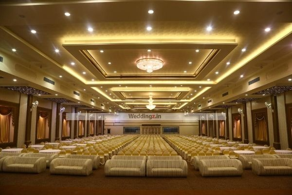

ABOUT
DRLS PALACE
BANGALORE

DRLS Palace is a Best Wedding Hall is located in Rajajinagar Bangalore. The Wedding reception hall seating capacity is 1500 and floating up to 4000 can manage. DRLS Palace has spacious car parking facility which can park upto 1000 cars. Facilities at DRLS Palace are ac, dress changing rooms, car parking & separate dining hall. Total guest rooms in this wedding hall is 41. DRLS Palace is suitable for Engagement, Sangeet Event, Baby SHower, Upnayanam, Wedding Anniversary, Birthday, Engagement, Wedding Reception, Marriage, Exhibition, Product Launch , Conference & Convocation Ceremony.
Nearest localities to DRLS Palace are Jalahalli West, Tumkur Road, Jalahalli, Peenya, Laggere, Vidyaranyapura, Yeshwanthpur, Mathikere, New BEL Road, Sanjay Nagar, which can reach by bus or metro easily.
Booking at DRLS Palace Banquet Hall will confirmed against 50% advance payment. GST + Service Tax is applicable
Banquet Hall Detailsof DRLS Palace
DRLS Palace has 2 banquet hall to host family or corporate event
Reception Hall is indoor banquet hall with a seating capacity of 1500 and 4000 floating guests
Dining Hall is indoor banquet hall with a seating capacity of 1000 and 2000 floating guests
| BOOKING COST: |
10000 |
| LOCATION:
|
BANGLAORE |
| CONTACT:
|
BANGLAORE |
| EMAIL:
|
Contact@gmail.com |
| TOTAL CAPACITY
|
1200 |
| SERVICES:
|
Food buffet , Employees, Decoration,Water |